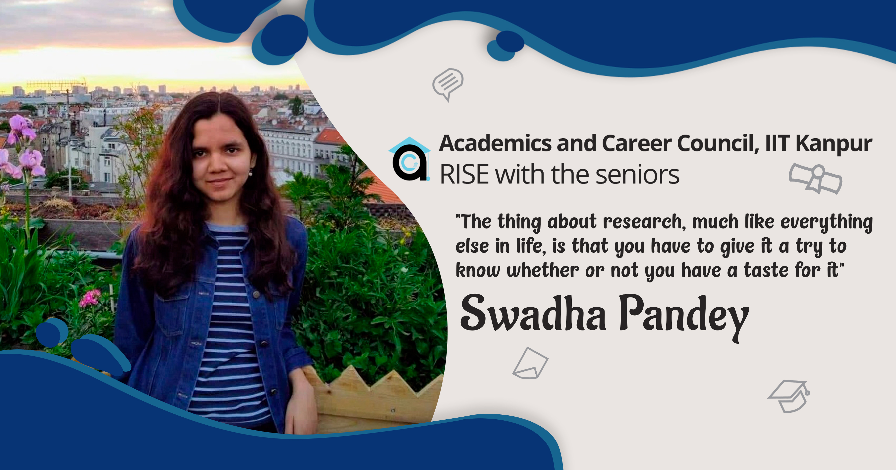
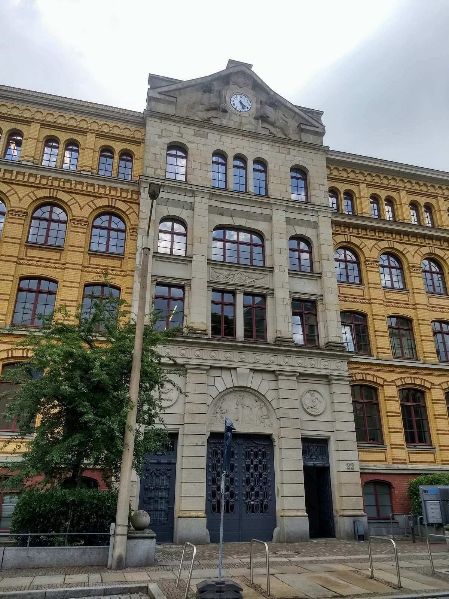
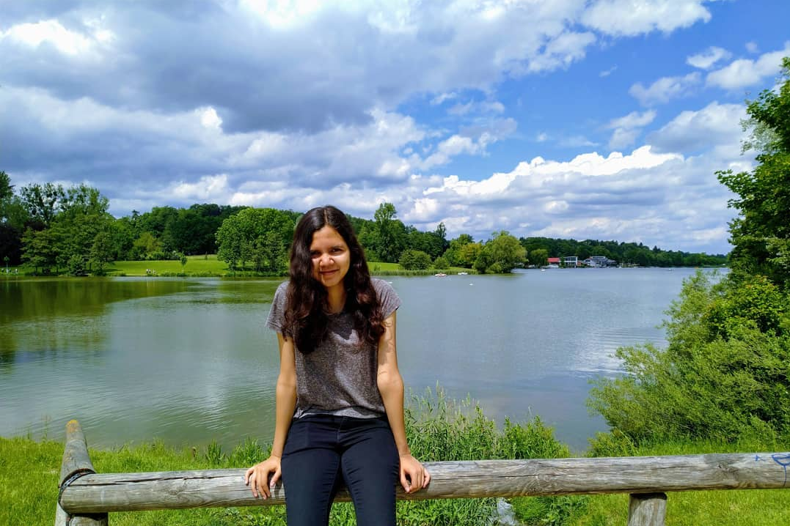
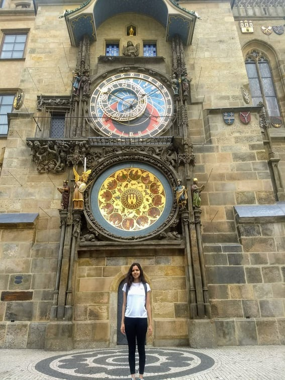

June 26, 2020

The journey begins
Entering IIT Kanpur, I was clear about one thing - I loved Physics. But after two years of solving free
body diagrams of monkeys on ropes, I wanted to work on something real. So during my first semester
itself, I started looking for a professor who would be willing to give me a project. I was hesitant at
first since I knew nothing about research. But I left that decision up to the profs - my job was just to
apply.

In the winter break after my first semester, a very generous professor at IIT Delhi gave me a small
reading project on Quantum Information Theory. This was my first breakthrough to grab a proper research
project with him the following summer - and after that, there was no looking back. I knew I wanted to
pursue research. The thing about research, much like everything else in life, is that you have to try it
to know whether or not you have a taste for it. But even if you end up disliking it, you’ll learn
something about yourself and what you truly desire from the journey.
I loved the work at IIT Delhi and so I took up another project with the prof in the winter break after
my third semester. At this point, I had no intention of applying for an internship in a foreign country.
There's a usual trend to be observed at IIT Kanpur - after your sophomore year, you do a research intern
in India and after your third year, you try to get one abroad. It hadn’t occurred to me that I could do
something different. I was just a second-year undergraduate who had no expertise in anything. Why would
anyone in a foreign country pay me to go work for them? But then I realised - why not try anyway?
The Application Procedure
And so the beautiful process began and I started counting me no. of steps, I got closer to my
dream.
Step one - Get the template from a senior and make a CV.
Step two - Find programs. Very few international programs are open to second years. And since I
was very late, some deadlines had long passed. I still found a few programs and applied to them. My
hopes were very high, but they weren’t able to get a stable flight, and eventually came crashing - I got
rejected by all of them. But, I never gave up.
Next, I turned to email applications:

Step three - Find professors and research groups to email. This one is tricky, and a question I
get asked very often is - how do you know who to email? It is well said you need to do at least some
considerable amount of hard work to get something you desire; you do a lot of research about the fields
you’re interested in and the people working in those fields, but it also has a lot to do with luck. So I
went to the webpages of the Physics departments of universities/institutes, looked at the list of
research groups, and selected the ones whose research I found interesting. I decided not to be choosy
about the field. I had experience only in Quantum Information Theory, and while I loved it, I was open
to trying out new things.
Step four - Writing the email. I know this step is difficult and confusing, so I would suggest
getting some samples from seniors to get an idea of the format. That’s what I did. So I wrote the
emails, attached my CV and transcript, and sent them.
Step five - Waiting. I found myself checking my inbox way too often at this step, although I
honestly didn’t expect any positive reply. I couldn’t imagine anyone would be willing to give me a
chance. But after many emails and rejections, someone did - and I will be eternally grateful for it.
Step six - Interview. I got a very positive reply from the group leader I emailed at MPI MiS
(This is a research institute, so there are no professors. There are research groups and the person
heading the group is called the group leader). We had a Skype interview, where he mainly asked about my
previous research work. He then asked for a letter of recommendation, after which he offered me a funded
internship with his group. I cannot stress enough how thankful I am for the opportunity he gave me.
After getting accepted, you have to get your Visa, and then you’re ready to go. The Visa process is
different for every country and so I won’t elaborate on it here, but be prepared to face a few
challenges at that stage too.

My experience
If I had to describe my experience there in one word, it would be ‘magical.’
I’ll start with the work aspect of it. Arriving at the institute, I was given a very warm welcome by my
group leader, group members, the administrative staff, and pretty much everyone who worked there. They
were all interested in learning about me and telling me about themselves and their work. I was given my
own workspace, a small area with a large window that had a gorgeous view. The problem I was working on
was related to stochastic processes, a Mathematical topic I had no previous experience with. I worked
with a postdoc in the group, and he was very helpful. The internship was for eleven weeks, and after a
lot of hard work, we had some very exciting results in the end.
The institute itself was an exceptionally diverse and interesting place. There were people from every
part of the world, and they were all extremely warm and friendly. My supervisors were French and Polish,
my flatmates were American and Pakistani, and my colleagues were German, Cameroonian, Canadian, Italian,
Irani, and British. Getting to know them and their stories truly broadened my perspective and worldview.
Playing Just Dance with my flatmates after work, attending my colleague’s orchestra recital, hanging out
at lunch with other institute members, and going out to the market square with my fellow group members,
I ended up making the most diverse set of friends and getting to know more about this beautiful
word.
Living alone in a foreign country teaches you a lot about life. I cooked most of my meals, bought my
groceries, cleaned my apartment, and did my laundry. In the whole process, I set fire to my apartment
only once.
Europe is basically an Enid Blyton novel come to life, from the bright blue clouds right down to the
enchanting dessert shops. In my city of Leipzig itself, I attended two festivals - Wave-Gotik-Treffen,
super cool goth music and fashion festival (one of the largest goth festivals in the world) and
Bachfest, a classical and jazz music festival. During these festivals, people from all over the world
came to attend and I had a lot of fun and interesting experiences.
I also traveled a lot. There are many cheap ways to travel there, and with a Schengen Visa, you can
travel all across Europe unrestricted. Some of these trips were with friends and some were solo.
Traveling solo in a foreign country is the most terrifying yet exhilarating experience one can have.
From sunrise in the German countryside to lunch at Einstein’s favourite cafe in Vienna, to an evening
stroll along with the remnants of the Berlin Wall, to sunset on the Charles Bridge in Prague, these
trips gave me some of the craziest and most wonderful stories of my life.
All in all, it was the most inspiring experience I have ever had.
- Swadha Pandey
-edited by Tanishq Chourisi